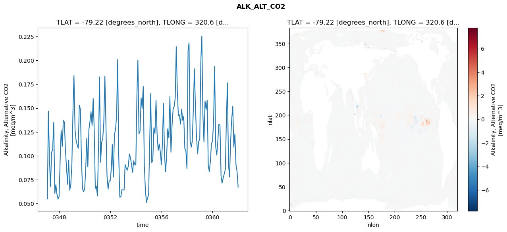
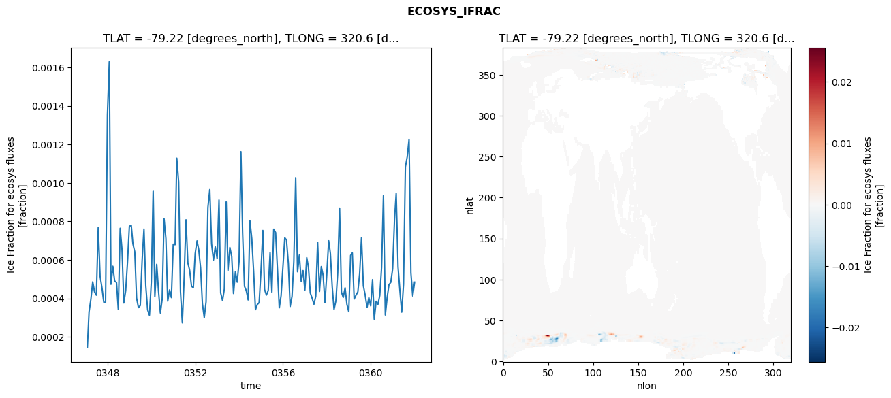
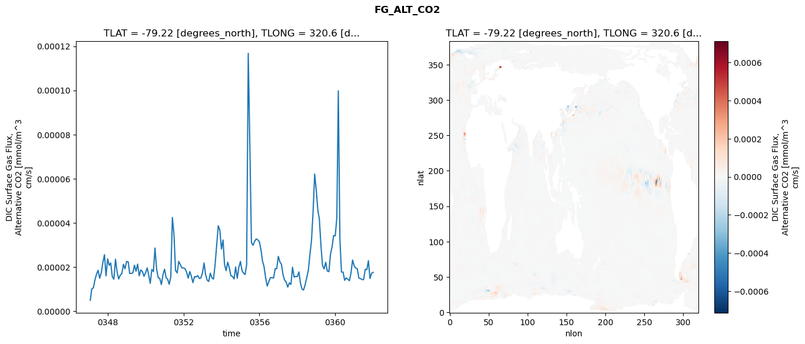
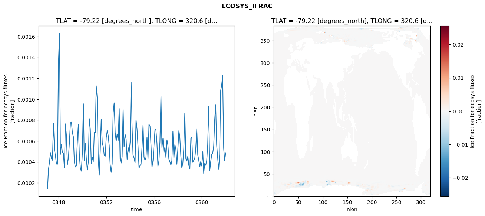
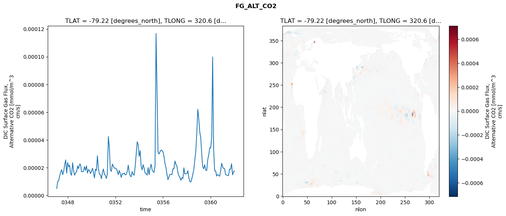
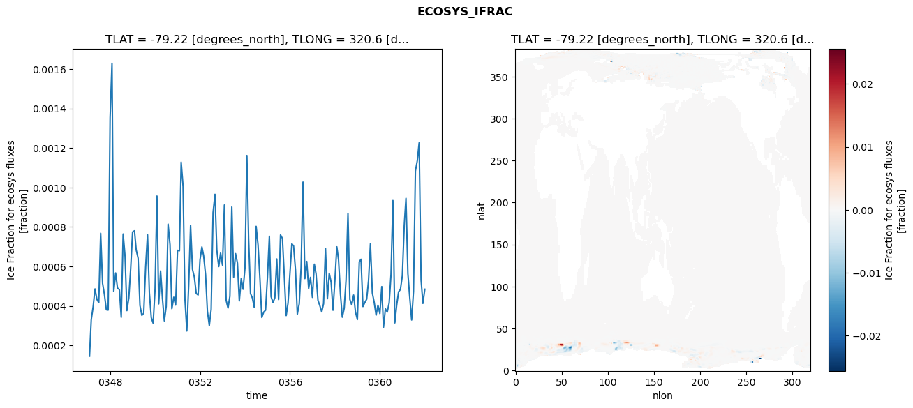
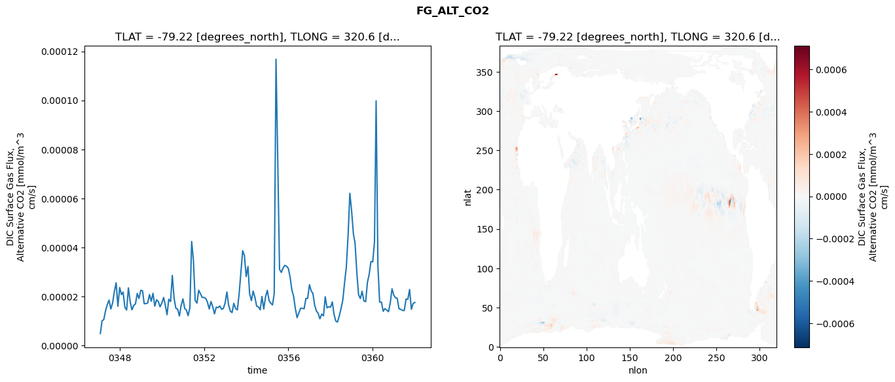

glb-dor_North_Atlantic_basin_043_1999-01-01_00172#
Simulation details#
Case: smyle.cdr-atlas-v0.glb-dor_North_Atlantic_basin_043_1999-01-01_00172.001
Basin: North_Atlantic_basin
Polygon: 43.0
Start date: 1999-01
Show code cell source Hide code cell source
import xarray as xr
import matplotlib.pyplot as plt
Show code cell source Hide code cell source
zarr_store = "/path/to/zarr/store"
# Parameters
zarr_store = "/global/cfs/projectdirs/m4746/Projects/Ocean-CDR-Atlas-v0/data/validation/smyle.cdr-atlas-v0.glb-dor_North_Atlantic_basin_043_1999-01-01_00172.001.validation.zarr"
Show code cell source Hide code cell source
%%time
ds_o = xr.open_zarr(zarr_store).compute()
ds_o
CPU times: user 612 ms, sys: 433 ms, total: 1.04 s
Wall time: 1.2 s
<xarray.Dataset> Size: 2MB
Dimensions: (nlat: 384, nlon: 320, time: 180)
Coordinates:
TLAT float64 8B -79.22
TLONG float64 8B 320.6
ULAT float64 8B -78.95
ULONG float64 8B 321.1
* time (time) object 1kB 0347-02-01 00:00:00 ... 0362-01-01 0...
z_t float32 4B 500.0
Dimensions without coordinates: nlat, nlon
Data variables:
ALK_ALT_CO2_diff (nlat, nlon) float32 492kB nan nan nan ... nan nan nan
ALK_ALT_CO2_rmse (time) float64 1kB 0.05496 0.147 ... 0.08392 0.06723
DIC_ALT_CO2_diff (nlat, nlon) float32 492kB nan nan nan ... nan nan nan
DIC_ALT_CO2_rmse (time) float64 1kB 0.05712 0.1437 0.107 ... 0.1279 0.1167
ECOSYS_IFRAC_diff (nlat, nlon) float32 492kB nan nan nan ... nan nan nan
ECOSYS_IFRAC_rmse (time) float64 1kB 0.0001451 0.0003297 ... 0.0004846
FG_ALT_CO2_diff (nlat, nlon) float32 492kB nan nan nan ... nan nan nan
FG_ALT_CO2_rmse (time) float64 1kB 4.86e-06 9.999e-06 ... 1.754e-05xarray.Dataset
- nlat: 384
- nlon: 320
- time: 180
- TLAT()float64-79.22
- long_name :
- array of t-grid latitudes
- units :
- degrees_north
array(-79.22052261)
- TLONG()float64320.6
- long_name :
- array of t-grid longitudes
- units :
- degrees_east
array(320.56250892)
- ULAT()float64-78.95
- long_name :
- array of u-grid latitudes
- units :
- degrees_north
array(-78.95289509)
- ULONG()float64321.1
- long_name :
- array of u-grid longitudes
- units :
- degrees_east
array(321.12500894)
- time(time)object0347-02-01 00:00:00 ... 0362-01-...
- bounds :
- time_bound
- long_name :
- time
array([cftime.DatetimeNoLeap(347, 2, 1, 0, 0, 0, 0, has_year_zero=True), cftime.DatetimeNoLeap(347, 3, 1, 0, 0, 0, 0, has_year_zero=True), cftime.DatetimeNoLeap(347, 4, 1, 0, 0, 0, 0, has_year_zero=True), cftime.DatetimeNoLeap(347, 5, 1, 0, 0, 0, 0, has_year_zero=True), cftime.DatetimeNoLeap(347, 6, 1, 0, 0, 0, 0, has_year_zero=True), cftime.DatetimeNoLeap(347, 7, 1, 0, 0, 0, 0, has_year_zero=True), cftime.DatetimeNoLeap(347, 8, 1, 0, 0, 0, 0, has_year_zero=True), cftime.DatetimeNoLeap(347, 9, 1, 0, 0, 0, 0, has_year_zero=True), cftime.DatetimeNoLeap(347, 10, 1, 0, 0, 0, 0, has_year_zero=True), cftime.DatetimeNoLeap(347, 11, 1, 0, 0, 0, 0, has_year_zero=True), cftime.DatetimeNoLeap(347, 12, 1, 0, 0, 0, 0, has_year_zero=True), cftime.DatetimeNoLeap(348, 1, 1, 0, 0, 0, 0, has_year_zero=True), cftime.DatetimeNoLeap(348, 2, 1, 0, 0, 0, 0, has_year_zero=True), cftime.DatetimeNoLeap(348, 3, 1, 0, 0, 0, 0, has_year_zero=True), cftime.DatetimeNoLeap(348, 4, 1, 0, 0, 0, 0, has_year_zero=True), cftime.DatetimeNoLeap(348, 5, 1, 0, 0, 0, 0, has_year_zero=True), cftime.DatetimeNoLeap(348, 6, 1, 0, 0, 0, 0, has_year_zero=True), cftime.DatetimeNoLeap(348, 7, 1, 0, 0, 0, 0, has_year_zero=True), cftime.DatetimeNoLeap(348, 8, 1, 0, 0, 0, 0, has_year_zero=True), cftime.DatetimeNoLeap(348, 9, 1, 0, 0, 0, 0, has_year_zero=True), cftime.DatetimeNoLeap(348, 10, 1, 0, 0, 0, 0, has_year_zero=True), cftime.DatetimeNoLeap(348, 11, 1, 0, 0, 0, 0, has_year_zero=True), cftime.DatetimeNoLeap(348, 12, 1, 0, 0, 0, 0, has_year_zero=True), cftime.DatetimeNoLeap(349, 1, 1, 0, 0, 0, 0, has_year_zero=True), cftime.DatetimeNoLeap(349, 2, 1, 0, 0, 0, 0, has_year_zero=True), cftime.DatetimeNoLeap(349, 3, 1, 0, 0, 0, 0, has_year_zero=True), cftime.DatetimeNoLeap(349, 4, 1, 0, 0, 0, 0, has_year_zero=True), cftime.DatetimeNoLeap(349, 5, 1, 0, 0, 0, 0, has_year_zero=True), cftime.DatetimeNoLeap(349, 6, 1, 0, 0, 0, 0, has_year_zero=True), cftime.DatetimeNoLeap(349, 7, 1, 0, 0, 0, 0, has_year_zero=True), cftime.DatetimeNoLeap(349, 8, 1, 0, 0, 0, 0, has_year_zero=True), cftime.DatetimeNoLeap(349, 9, 1, 0, 0, 0, 0, has_year_zero=True), cftime.DatetimeNoLeap(349, 10, 1, 0, 0, 0, 0, has_year_zero=True), cftime.DatetimeNoLeap(349, 11, 1, 0, 0, 0, 0, has_year_zero=True), cftime.DatetimeNoLeap(349, 12, 1, 0, 0, 0, 0, has_year_zero=True), cftime.DatetimeNoLeap(350, 1, 1, 0, 0, 0, 0, has_year_zero=True), cftime.DatetimeNoLeap(350, 2, 1, 0, 0, 0, 0, has_year_zero=True), cftime.DatetimeNoLeap(350, 3, 1, 0, 0, 0, 0, has_year_zero=True), cftime.DatetimeNoLeap(350, 4, 1, 0, 0, 0, 0, has_year_zero=True), cftime.DatetimeNoLeap(350, 5, 1, 0, 0, 0, 0, has_year_zero=True), cftime.DatetimeNoLeap(350, 6, 1, 0, 0, 0, 0, has_year_zero=True), cftime.DatetimeNoLeap(350, 7, 1, 0, 0, 0, 0, has_year_zero=True), cftime.DatetimeNoLeap(350, 8, 1, 0, 0, 0, 0, has_year_zero=True), cftime.DatetimeNoLeap(350, 9, 1, 0, 0, 0, 0, has_year_zero=True), cftime.DatetimeNoLeap(350, 10, 1, 0, 0, 0, 0, has_year_zero=True), cftime.DatetimeNoLeap(350, 11, 1, 0, 0, 0, 0, has_year_zero=True), cftime.DatetimeNoLeap(350, 12, 1, 0, 0, 0, 0, has_year_zero=True), cftime.DatetimeNoLeap(351, 1, 1, 0, 0, 0, 0, has_year_zero=True), cftime.DatetimeNoLeap(351, 2, 1, 0, 0, 0, 0, has_year_zero=True), cftime.DatetimeNoLeap(351, 3, 1, 0, 0, 0, 0, has_year_zero=True), cftime.DatetimeNoLeap(351, 4, 1, 0, 0, 0, 0, has_year_zero=True), cftime.DatetimeNoLeap(351, 5, 1, 0, 0, 0, 0, has_year_zero=True), cftime.DatetimeNoLeap(351, 6, 1, 0, 0, 0, 0, has_year_zero=True), cftime.DatetimeNoLeap(351, 7, 1, 0, 0, 0, 0, has_year_zero=True), cftime.DatetimeNoLeap(351, 8, 1, 0, 0, 0, 0, has_year_zero=True), cftime.DatetimeNoLeap(351, 9, 1, 0, 0, 0, 0, has_year_zero=True), cftime.DatetimeNoLeap(351, 10, 1, 0, 0, 0, 0, has_year_zero=True), cftime.DatetimeNoLeap(351, 11, 1, 0, 0, 0, 0, has_year_zero=True), cftime.DatetimeNoLeap(351, 12, 1, 0, 0, 0, 0, has_year_zero=True), cftime.DatetimeNoLeap(352, 1, 1, 0, 0, 0, 0, has_year_zero=True), cftime.DatetimeNoLeap(352, 2, 1, 0, 0, 0, 0, has_year_zero=True), cftime.DatetimeNoLeap(352, 3, 1, 0, 0, 0, 0, has_year_zero=True), cftime.DatetimeNoLeap(352, 4, 1, 0, 0, 0, 0, has_year_zero=True), cftime.DatetimeNoLeap(352, 5, 1, 0, 0, 0, 0, has_year_zero=True), cftime.DatetimeNoLeap(352, 6, 1, 0, 0, 0, 0, has_year_zero=True), cftime.DatetimeNoLeap(352, 7, 1, 0, 0, 0, 0, has_year_zero=True), cftime.DatetimeNoLeap(352, 8, 1, 0, 0, 0, 0, has_year_zero=True), cftime.DatetimeNoLeap(352, 9, 1, 0, 0, 0, 0, has_year_zero=True), cftime.DatetimeNoLeap(352, 10, 1, 0, 0, 0, 0, has_year_zero=True), cftime.DatetimeNoLeap(352, 11, 1, 0, 0, 0, 0, has_year_zero=True), cftime.DatetimeNoLeap(352, 12, 1, 0, 0, 0, 0, has_year_zero=True), cftime.DatetimeNoLeap(353, 1, 1, 0, 0, 0, 0, has_year_zero=True), cftime.DatetimeNoLeap(353, 2, 1, 0, 0, 0, 0, has_year_zero=True), cftime.DatetimeNoLeap(353, 3, 1, 0, 0, 0, 0, has_year_zero=True), cftime.DatetimeNoLeap(353, 4, 1, 0, 0, 0, 0, has_year_zero=True), cftime.DatetimeNoLeap(353, 5, 1, 0, 0, 0, 0, has_year_zero=True), cftime.DatetimeNoLeap(353, 6, 1, 0, 0, 0, 0, has_year_zero=True), cftime.DatetimeNoLeap(353, 7, 1, 0, 0, 0, 0, has_year_zero=True), cftime.DatetimeNoLeap(353, 8, 1, 0, 0, 0, 0, has_year_zero=True), cftime.DatetimeNoLeap(353, 9, 1, 0, 0, 0, 0, has_year_zero=True), cftime.DatetimeNoLeap(353, 10, 1, 0, 0, 0, 0, has_year_zero=True), cftime.DatetimeNoLeap(353, 11, 1, 0, 0, 0, 0, has_year_zero=True), cftime.DatetimeNoLeap(353, 12, 1, 0, 0, 0, 0, has_year_zero=True), cftime.DatetimeNoLeap(354, 1, 1, 0, 0, 0, 0, has_year_zero=True), cftime.DatetimeNoLeap(354, 2, 1, 0, 0, 0, 0, has_year_zero=True), cftime.DatetimeNoLeap(354, 3, 1, 0, 0, 0, 0, has_year_zero=True), cftime.DatetimeNoLeap(354, 4, 1, 0, 0, 0, 0, has_year_zero=True), cftime.DatetimeNoLeap(354, 5, 1, 0, 0, 0, 0, has_year_zero=True), cftime.DatetimeNoLeap(354, 6, 1, 0, 0, 0, 0, has_year_zero=True), cftime.DatetimeNoLeap(354, 7, 1, 0, 0, 0, 0, has_year_zero=True), cftime.DatetimeNoLeap(354, 8, 1, 0, 0, 0, 0, has_year_zero=True), cftime.DatetimeNoLeap(354, 9, 1, 0, 0, 0, 0, has_year_zero=True), cftime.DatetimeNoLeap(354, 10, 1, 0, 0, 0, 0, has_year_zero=True), cftime.DatetimeNoLeap(354, 11, 1, 0, 0, 0, 0, has_year_zero=True), cftime.DatetimeNoLeap(354, 12, 1, 0, 0, 0, 0, has_year_zero=True), cftime.DatetimeNoLeap(355, 1, 1, 0, 0, 0, 0, has_year_zero=True), cftime.DatetimeNoLeap(355, 2, 1, 0, 0, 0, 0, has_year_zero=True), cftime.DatetimeNoLeap(355, 3, 1, 0, 0, 0, 0, has_year_zero=True), cftime.DatetimeNoLeap(355, 4, 1, 0, 0, 0, 0, has_year_zero=True), cftime.DatetimeNoLeap(355, 5, 1, 0, 0, 0, 0, has_year_zero=True), cftime.DatetimeNoLeap(355, 6, 1, 0, 0, 0, 0, has_year_zero=True), cftime.DatetimeNoLeap(355, 7, 1, 0, 0, 0, 0, has_year_zero=True), cftime.DatetimeNoLeap(355, 8, 1, 0, 0, 0, 0, has_year_zero=True), cftime.DatetimeNoLeap(355, 9, 1, 0, 0, 0, 0, has_year_zero=True), cftime.DatetimeNoLeap(355, 10, 1, 0, 0, 0, 0, has_year_zero=True), cftime.DatetimeNoLeap(355, 11, 1, 0, 0, 0, 0, has_year_zero=True), cftime.DatetimeNoLeap(355, 12, 1, 0, 0, 0, 0, has_year_zero=True), cftime.DatetimeNoLeap(356, 1, 1, 0, 0, 0, 0, has_year_zero=True), cftime.DatetimeNoLeap(356, 2, 1, 0, 0, 0, 0, has_year_zero=True), cftime.DatetimeNoLeap(356, 3, 1, 0, 0, 0, 0, has_year_zero=True), cftime.DatetimeNoLeap(356, 4, 1, 0, 0, 0, 0, has_year_zero=True), cftime.DatetimeNoLeap(356, 5, 1, 0, 0, 0, 0, has_year_zero=True), cftime.DatetimeNoLeap(356, 6, 1, 0, 0, 0, 0, has_year_zero=True), cftime.DatetimeNoLeap(356, 7, 1, 0, 0, 0, 0, has_year_zero=True), cftime.DatetimeNoLeap(356, 8, 1, 0, 0, 0, 0, has_year_zero=True), cftime.DatetimeNoLeap(356, 9, 1, 0, 0, 0, 0, has_year_zero=True), cftime.DatetimeNoLeap(356, 10, 1, 0, 0, 0, 0, has_year_zero=True), cftime.DatetimeNoLeap(356, 11, 1, 0, 0, 0, 0, has_year_zero=True), cftime.DatetimeNoLeap(356, 12, 1, 0, 0, 0, 0, has_year_zero=True), cftime.DatetimeNoLeap(357, 1, 1, 0, 0, 0, 0, has_year_zero=True), cftime.DatetimeNoLeap(357, 2, 1, 0, 0, 0, 0, has_year_zero=True), cftime.DatetimeNoLeap(357, 3, 1, 0, 0, 0, 0, has_year_zero=True), cftime.DatetimeNoLeap(357, 4, 1, 0, 0, 0, 0, has_year_zero=True), cftime.DatetimeNoLeap(357, 5, 1, 0, 0, 0, 0, has_year_zero=True), cftime.DatetimeNoLeap(357, 6, 1, 0, 0, 0, 0, has_year_zero=True), cftime.DatetimeNoLeap(357, 7, 1, 0, 0, 0, 0, has_year_zero=True), cftime.DatetimeNoLeap(357, 8, 1, 0, 0, 0, 0, has_year_zero=True), cftime.DatetimeNoLeap(357, 9, 1, 0, 0, 0, 0, has_year_zero=True), cftime.DatetimeNoLeap(357, 10, 1, 0, 0, 0, 0, has_year_zero=True), cftime.DatetimeNoLeap(357, 11, 1, 0, 0, 0, 0, has_year_zero=True), cftime.DatetimeNoLeap(357, 12, 1, 0, 0, 0, 0, has_year_zero=True), cftime.DatetimeNoLeap(358, 1, 1, 0, 0, 0, 0, has_year_zero=True), cftime.DatetimeNoLeap(358, 2, 1, 0, 0, 0, 0, has_year_zero=True), cftime.DatetimeNoLeap(358, 3, 1, 0, 0, 0, 0, has_year_zero=True), cftime.DatetimeNoLeap(358, 4, 1, 0, 0, 0, 0, has_year_zero=True), cftime.DatetimeNoLeap(358, 5, 1, 0, 0, 0, 0, has_year_zero=True), cftime.DatetimeNoLeap(358, 6, 1, 0, 0, 0, 0, has_year_zero=True), cftime.DatetimeNoLeap(358, 7, 1, 0, 0, 0, 0, has_year_zero=True), cftime.DatetimeNoLeap(358, 8, 1, 0, 0, 0, 0, has_year_zero=True), cftime.DatetimeNoLeap(358, 9, 1, 0, 0, 0, 0, has_year_zero=True), cftime.DatetimeNoLeap(358, 10, 1, 0, 0, 0, 0, has_year_zero=True), cftime.DatetimeNoLeap(358, 11, 1, 0, 0, 0, 0, has_year_zero=True), cftime.DatetimeNoLeap(358, 12, 1, 0, 0, 0, 0, has_year_zero=True), cftime.DatetimeNoLeap(359, 1, 1, 0, 0, 0, 0, has_year_zero=True), cftime.DatetimeNoLeap(359, 2, 1, 0, 0, 0, 0, has_year_zero=True), cftime.DatetimeNoLeap(359, 3, 1, 0, 0, 0, 0, has_year_zero=True), cftime.DatetimeNoLeap(359, 4, 1, 0, 0, 0, 0, has_year_zero=True), cftime.DatetimeNoLeap(359, 5, 1, 0, 0, 0, 0, has_year_zero=True), cftime.DatetimeNoLeap(359, 6, 1, 0, 0, 0, 0, has_year_zero=True), cftime.DatetimeNoLeap(359, 7, 1, 0, 0, 0, 0, has_year_zero=True), cftime.DatetimeNoLeap(359, 8, 1, 0, 0, 0, 0, has_year_zero=True), cftime.DatetimeNoLeap(359, 9, 1, 0, 0, 0, 0, has_year_zero=True), cftime.DatetimeNoLeap(359, 10, 1, 0, 0, 0, 0, has_year_zero=True), cftime.DatetimeNoLeap(359, 11, 1, 0, 0, 0, 0, has_year_zero=True), cftime.DatetimeNoLeap(359, 12, 1, 0, 0, 0, 0, has_year_zero=True), cftime.DatetimeNoLeap(360, 1, 1, 0, 0, 0, 0, has_year_zero=True), cftime.DatetimeNoLeap(360, 2, 1, 0, 0, 0, 0, has_year_zero=True), cftime.DatetimeNoLeap(360, 3, 1, 0, 0, 0, 0, has_year_zero=True), cftime.DatetimeNoLeap(360, 4, 1, 0, 0, 0, 0, has_year_zero=True), cftime.DatetimeNoLeap(360, 5, 1, 0, 0, 0, 0, has_year_zero=True), cftime.DatetimeNoLeap(360, 6, 1, 0, 0, 0, 0, has_year_zero=True), cftime.DatetimeNoLeap(360, 7, 1, 0, 0, 0, 0, has_year_zero=True), cftime.DatetimeNoLeap(360, 8, 1, 0, 0, 0, 0, has_year_zero=True), cftime.DatetimeNoLeap(360, 9, 1, 0, 0, 0, 0, has_year_zero=True), cftime.DatetimeNoLeap(360, 10, 1, 0, 0, 0, 0, has_year_zero=True), cftime.DatetimeNoLeap(360, 11, 1, 0, 0, 0, 0, has_year_zero=True), cftime.DatetimeNoLeap(360, 12, 1, 0, 0, 0, 0, has_year_zero=True), cftime.DatetimeNoLeap(361, 1, 1, 0, 0, 0, 0, has_year_zero=True), cftime.DatetimeNoLeap(361, 2, 1, 0, 0, 0, 0, has_year_zero=True), cftime.DatetimeNoLeap(361, 3, 1, 0, 0, 0, 0, has_year_zero=True), cftime.DatetimeNoLeap(361, 4, 1, 0, 0, 0, 0, has_year_zero=True), cftime.DatetimeNoLeap(361, 5, 1, 0, 0, 0, 0, has_year_zero=True), cftime.DatetimeNoLeap(361, 6, 1, 0, 0, 0, 0, has_year_zero=True), cftime.DatetimeNoLeap(361, 7, 1, 0, 0, 0, 0, has_year_zero=True), cftime.DatetimeNoLeap(361, 8, 1, 0, 0, 0, 0, has_year_zero=True), cftime.DatetimeNoLeap(361, 9, 1, 0, 0, 0, 0, has_year_zero=True), cftime.DatetimeNoLeap(361, 10, 1, 0, 0, 0, 0, has_year_zero=True), cftime.DatetimeNoLeap(361, 11, 1, 0, 0, 0, 0, has_year_zero=True), cftime.DatetimeNoLeap(361, 12, 1, 0, 0, 0, 0, has_year_zero=True), cftime.DatetimeNoLeap(362, 1, 1, 0, 0, 0, 0, has_year_zero=True)], dtype=object) - z_t()float32500.0
- long_name :
- depth from surface to midpoint of layer
- positive :
- down
- units :
- centimeters
- valid_max :
- 537500.0
- valid_min :
- 500.0
array(500., dtype=float32)
- ALK_ALT_CO2_diff(nlat, nlon)float32nan nan nan nan ... nan nan nan nan
- cell_methods :
- time: mean
- grid_loc :
- 3111
- long_name :
- Alkalinity, Alternative CO2
- units :
- meq/m^3
array([[ nan, nan, nan, ..., nan, nan, nan], [ nan, nan, nan, ..., nan, nan, nan], [-0.00024414, -0.00585938, 0.00878906, ..., nan, nan, nan], ..., [ nan, nan, nan, ..., nan, nan, nan], [ nan, nan, nan, ..., nan, nan, nan], [ nan, nan, nan, ..., nan, nan, nan]], dtype=float32) - ALK_ALT_CO2_rmse(time)float640.05496 0.147 ... 0.08392 0.06723
- cell_methods :
- time: mean
- grid_loc :
- 3111
- long_name :
- Alkalinity, Alternative CO2
- units :
- meq/m^3
array([0.05495987, 0.14699687, 0.0956565 , 0.06776559, 0.10385433, 0.10603599, 0.13534331, 0.06061011, 0.06971953, 0.05965657, 0.05471645, 0.05741374, 0.09633504, 0.12651511, 0.10988343, 0.13704398, 0.13541342, 0.10583708, 0.0875227 , 0.07008983, 0.09548249, 0.06388928, 0.06993671, 0.09157762, 0.14705217, 0.18424282, 0.12746681, 0.11630325, 0.11178437, 0.10792399, 0.15321558, 0.14880241, 0.09620037, 0.06535445, 0.06233054, 0.06533948, 0.08725907, 0.11826971, 0.08834406, 0.1271149 , 0.13578055, 0.1463123 , 0.13196621, 0.16005989, 0.12660901, 0.06591198, 0.0679026 , 0.05783954, 0.11116484, 0.18283694, 0.09331429, 0.114299 , 0.11803108, 0.13476546, 0.18358598, 0.13050337, 0.07898932, 0.06504752, 0.07367524, 0.0739892 , 0.0866005 , 0.11192488, 0.07775154, 0.12250389, 0.12788761, 0.14143307, 0.20100392, 0.09952563, 0.05659482, 0.05738789, 0.06457357, 0.06415001, 0.06406004, 0.09088434, 0.08726235, 0.08494776, 0.08939997, 0.1018629 , 0.09812016, 0.09069689, 0.08268669, 0.09478215, 0.09102209, 0.09052591, 0.16309157, 0.20043861, 0.12291924, 0.12587854, 0.1607371 , 0.1498089 , 0.17307398, 0.09016483, 0.06416703, 0.05100626, 0.05580355, 0.05925331, 0.11359661, 0.16531671, 0.09273887, 0.09581261, 0.12941888, 0.12337657, 0.15805267, 0.12252451, 0.10578226, 0.11241404, 0.1042814 , 0.09093256, 0.11399595, 0.15501367, 0.10020784, 0.0832728 , 0.10074937, 0.12828571, 0.11902768, 0.16204883, 0.10377347, 0.13181405, 0.14893537, 0.15185346, 0.16080022, 0.21444381, 0.16802556, 0.14206991, 0.14297142, 0.13322055, 0.14912317, 0.13725161, 0.14131518, 0.10736278, 0.10541317, 0.0866303 , 0.21067402, 0.21839329, 0.11680816, 0.10904037, 0.11508063, 0.1471758 , 0.19129639, 0.1503433 , 0.11984726, 0.10223418, 0.11499761, 0.11720904, 0.19920877, 0.22568989, 0.14275563, 0.11451169, 0.15753466, 0.14817931, 0.158344 , 0.09013726, 0.0832841 , 0.09453806, 0.11283155, 0.11523695, 0.13809106, 0.19380016, 0.11000409, 0.1008729 , 0.11559953, 0.13330828, 0.13220622, 0.0788235 , 0.07135993, 0.07672775, 0.08107272, 0.08565929, 0.13816357, 0.17651597, 0.09184124, 0.07776292, 0.11534439, 0.13758508, 0.15194476, 0.10901442, 0.12289953, 0.09052089, 0.08392295, 0.06723259]) - DIC_ALT_CO2_diff(nlat, nlon)float32nan nan nan nan ... nan nan nan nan
- cell_methods :
- time: mean
- grid_loc :
- 3111
- long_name :
- Dissolved Inorganic Carbon, Alternative CO2
- units :
- mmol/m^3
array([[ nan, nan, nan, ..., nan, nan, nan], [ nan, nan, nan, ..., nan, nan, nan], [0.00195312, 0.00244141, 0.01977539, ..., nan, nan, nan], ..., [ nan, nan, nan, ..., nan, nan, nan], [ nan, nan, nan, ..., nan, nan, nan], [ nan, nan, nan, ..., nan, nan, nan]], dtype=float32) - DIC_ALT_CO2_rmse(time)float640.05712 0.1437 ... 0.1279 0.1167
- cell_methods :
- time: mean
- grid_loc :
- 3111
- long_name :
- Dissolved Inorganic Carbon, Alternative CO2
- units :
- mmol/m^3
array([0.05712194, 0.1437297 , 0.10698822, 0.09284577, 0.11918445, 0.13678905, 0.16035863, 0.124568 , 0.13792229, 0.14689491, 0.1248915 , 0.14007188, 0.16923936, 0.18050225, 0.1568856 , 0.15674185, 0.15894675, 0.15344116, 0.1476682 , 0.14088074, 0.15710338, 0.14894442, 0.14109203, 0.14791965, 0.18348003, 0.21464654, 0.16645757, 0.14267196, 0.13890887, 0.13838198, 0.17535838, 0.18108756, 0.14882779, 0.12328384, 0.1149021 , 0.11853959, 0.13816133, 0.14393523, 0.11277336, 0.13706393, 0.14738446, 0.16762521, 0.16375022, 0.178486 , 0.15771775, 0.11637795, 0.12048303, 0.09960448, 0.13508655, 0.18675193, 0.12510406, 0.14448634, 0.15972885, 0.17420794, 0.19869564, 0.15872114, 0.1547675 , 0.13306999, 0.13814317, 0.13513819, 0.14885311, 0.16041179, 0.12455537, 0.15319921, 0.15125804, 0.16591159, 0.21736755, 0.13098406, 0.10691232, 0.10357959, 0.10895555, 0.10731652, 0.11248579, 0.1218523 , 0.11543437, 0.10748184, 0.11195425, 0.13155215, 0.13407497, 0.1657548 , 0.2073446 , 0.18853384, 0.17952671, 0.1661589 , 0.22751505, 0.24333847, 0.17795049, 0.18335675, 0.18867983, 0.17573445, 0.19872037, 0.13707049, 0.12039788, 0.11360087, 0.11249858, 0.10860681, 0.14925479, 0.20734373, 0.15335259, 0.15013004, 0.18700232, 0.1850975 , 0.18981939, 0.17278072, 0.20182406, 0.23107524, 0.24023838, 0.20632933, 0.21397877, 0.21313479, 0.15784415, 0.13035776, 0.13646436, 0.16694158, 0.15212446, 0.17971496, 0.16164526, 0.18597269, 0.20599071, 0.20423375, 0.20679428, 0.23428437, 0.18628585, 0.16419448, 0.16097732, 0.15846531, 0.17110432, 0.15590944, 0.14883546, 0.1313488 , 0.11561861, 0.10432226, 0.20239074, 0.20636043, 0.12031199, 0.11325783, 0.12647807, 0.17998345, 0.2259743 , 0.24044892, 0.26946597, 0.32484464, 0.32935064, 0.28137427, 0.33158068, 0.38101789, 0.2886877 , 0.19551004, 0.19871362, 0.18743138, 0.18871352, 0.15566842, 0.17766586, 0.21291528, 0.22612468, 0.21801316, 0.2123612 , 0.2591067 , 0.17840745, 0.15250544, 0.14895256, 0.1691829 , 0.16723392, 0.12890389, 0.12540813, 0.1478138 , 0.14315771, 0.14051768, 0.17162464, 0.19348116, 0.13381272, 0.11579604, 0.13730161, 0.16025198, 0.1750947 , 0.14423669, 0.1532515 , 0.13474265, 0.12794605, 0.11671403]) - ECOSYS_IFRAC_diff(nlat, nlon)float32nan nan nan nan ... nan nan nan nan
- cell_methods :
- time: mean
- grid_loc :
- 2110
- long_name :
- Ice Fraction for ecosys fluxes
- units :
- fraction
array([[ nan, nan, nan, ..., nan, nan, nan], [ nan, nan, nan, ..., nan, nan, nan], [-1.6546249e-04, -4.3570995e-05, -4.2557716e-05, ..., nan, nan, nan], ..., [ nan, nan, nan, ..., nan, nan, nan], [ nan, nan, nan, ..., nan, nan, nan], [ nan, nan, nan, ..., nan, nan, nan]], dtype=float32) - ECOSYS_IFRAC_rmse(time)float640.0001451 0.0003297 ... 0.0004846
- cell_methods :
- time: mean
- grid_loc :
- 2110
- long_name :
- Ice Fraction for ecosys fluxes
- units :
- fraction
array([0.00014507, 0.00032968, 0.00039657, 0.00048597, 0.00043328, 0.00041672, 0.00076828, 0.00051462, 0.00045779, 0.00038042, 0.00037876, 0.00135269, 0.00162958, 0.00047341, 0.00056703, 0.00049056, 0.00048261, 0.00034229, 0.00076445, 0.00065095, 0.00037616, 0.00044105, 0.00058754, 0.00077454, 0.00078067, 0.00068348, 0.00064193, 0.0004021 , 0.00035197, 0.00036307, 0.00059632, 0.00076044, 0.00046539, 0.00034009, 0.00031259, 0.00048418, 0.00095665, 0.00041025, 0.00057705, 0.00043813, 0.00032412, 0.00039688, 0.00081446, 0.00071045, 0.00038584, 0.00044426, 0.00040429, 0.00068202, 0.00067907, 0.00112848, 0.00100522, 0.00043656, 0.00027311, 0.00050343, 0.00080838, 0.00058487, 0.00054606, 0.00046312, 0.00045533, 0.0006336 , 0.00069889, 0.00065357, 0.00055882, 0.00037375, 0.00030059, 0.00038258, 0.00087252, 0.00096544, 0.00068337, 0.00059929, 0.00066782, 0.00060679, 0.00091119, 0.00042848, 0.00038902, 0.00044885, 0.0009012 , 0.00054543, 0.00066485, 0.00061721, 0.00042536, 0.00053833, 0.00048446, 0.00059151, 0.00116214, 0.00074051, 0.00046283, 0.00044025, 0.00039225, 0.00080307, 0.00070956, 0.00053715, 0.00034135, 0.00036863, 0.00037791, 0.00054538, 0.00075309, 0.00044671, 0.00041721, 0.00044108, 0.00063778, 0.00043213, 0.0007598 , 0.00074186, 0.00055573, 0.00035097, 0.00041447, 0.00056223, 0.00071491, 0.00070355, 0.00058237, 0.0003579 , 0.00041137, 0.00059298, 0.00102744, 0.00053833, 0.00062516, 0.00048847, 0.00054457, 0.00044325, 0.00061155, 0.00056243, 0.00042853, 0.00040164, 0.00036973, 0.00041146, 0.00069141, 0.00043629, 0.0005655 , 0.00051911, 0.00037808, 0.00052914, 0.00069939, 0.00063398, 0.00046022, 0.00034277, 0.00038805, 0.00053181, 0.00086924, 0.00043278, 0.00040525, 0.0004549 , 0.0003696 , 0.00033099, 0.00062347, 0.00063649, 0.00039666, 0.00041654, 0.00043397, 0.00052846, 0.00071537, 0.00046533, 0.00041812, 0.00035323, 0.00040382, 0.00036114, 0.0004978 , 0.00029164, 0.00038523, 0.00036888, 0.00041514, 0.00055975, 0.000934 , 0.00031398, 0.00040335, 0.00047151, 0.00048342, 0.000553 , 0.0008078 , 0.00094534, 0.00056355, 0.00044312, 0.00032866, 0.00047341, 0.00108349, 0.00113623, 0.00122649, 0.00053275, 0.00041269, 0.0004846 ]) - FG_ALT_CO2_diff(nlat, nlon)float32nan nan nan nan ... nan nan nan nan
- cell_methods :
- time: mean
- grid_loc :
- 2110
- long_name :
- DIC Surface Gas Flux, Alternative CO2
- units :
- mmol/m^3 cm/s
array([[ nan, nan, nan, ..., nan, nan, nan], [ nan, nan, nan, ..., nan, nan, nan], [1.1151269e-07, 8.8761453e-08, 7.3795491e-08, ..., nan, nan, nan], ..., [ nan, nan, nan, ..., nan, nan, nan], [ nan, nan, nan, ..., nan, nan, nan], [ nan, nan, nan, ..., nan, nan, nan]], dtype=float32) - FG_ALT_CO2_rmse(time)float644.86e-06 9.999e-06 ... 1.754e-05
- cell_methods :
- time: mean
- grid_loc :
- 2110
- long_name :
- DIC Surface Gas Flux, Alternative CO2
- units :
- mmol/m^3 cm/s
array([4.85996868e-06, 9.99920483e-06, 1.05373812e-05, 1.40746924e-05, 1.66988830e-05, 1.84877949e-05, 1.48542934e-05, 1.73939738e-05, 2.20345824e-05, 2.55711136e-05, 1.59619588e-05, 2.36291643e-05, 2.07166282e-05, 2.17697574e-05, 1.55727009e-05, 1.44522652e-05, 2.34757088e-05, 1.78682462e-05, 1.45045795e-05, 1.62941001e-05, 1.69292652e-05, 2.11991101e-05, 1.91385183e-05, 2.24941930e-05, 2.22782626e-05, 1.70256864e-05, 1.70409606e-05, 1.73046344e-05, 2.07611890e-05, 1.80285322e-05, 2.12747184e-05, 1.59852669e-05, 1.86181457e-05, 1.79037137e-05, 1.57460088e-05, 1.73221553e-05, 1.95620921e-05, 1.64046672e-05, 1.25446974e-05, 1.88411953e-05, 1.78842565e-05, 2.85543294e-05, 1.91901831e-05, 1.51180642e-05, 1.48174995e-05, 1.19968430e-05, 1.63488472e-05, 1.89924528e-05, 1.50416733e-05, 1.44730034e-05, 1.21223145e-05, 1.54840527e-05, 4.23940044e-05, 3.48635412e-05, 1.83325971e-05, 1.72877972e-05, 2.25203839e-05, 2.10499885e-05, 1.95570636e-05, 1.96094018e-05, 1.91220396e-05, 1.76629227e-05, 1.48827160e-05, 1.79111417e-05, 1.57942429e-05, 1.28934198e-05, 1.56102141e-05, 1.54036728e-05, 1.60895370e-05, 1.47452143e-05, 1.50174877e-05, 1.72843579e-05, 2.17896947e-05, 1.66035315e-05, 1.40044359e-05, 1.33991211e-05, 1.71731374e-05, 1.50427966e-05, 1.45020626e-05, 2.11245035e-05, ... 1.16786062e-04, 7.58051303e-05, 3.10640169e-05, 2.97903441e-05, 3.15425915e-05, 3.26672275e-05, 3.23023010e-05, 3.13773175e-05, 2.77824907e-05, 2.27830348e-05, 2.01222360e-05, 1.51500828e-05, 1.13246620e-05, 1.32469813e-05, 1.51402154e-05, 1.51500610e-05, 1.49431019e-05, 1.91705189e-05, 1.91898529e-05, 2.47859227e-05, 2.21886619e-05, 2.12660855e-05, 1.64334918e-05, 1.40651933e-05, 1.30851677e-05, 1.08517594e-05, 1.27676557e-05, 1.20982987e-05, 1.98500141e-05, 1.53412626e-05, 1.57499134e-05, 1.56120831e-05, 1.77486407e-05, 1.28176084e-05, 9.96014001e-06, 9.52930830e-06, 1.19526649e-05, 1.50019030e-05, 1.84465406e-05, 2.56241311e-05, 3.19286536e-05, 4.50823979e-05, 6.20900815e-05, 5.48042700e-05, 4.54668534e-05, 4.17897985e-05, 2.97578616e-05, 2.06823252e-05, 1.91133089e-05, 2.21199038e-05, 1.81476320e-05, 1.78574359e-05, 2.56570258e-05, 2.90569770e-05, 3.42190063e-05, 3.40701115e-05, 4.24283991e-05, 9.98106701e-05, 3.23913692e-05, 1.76713686e-05, 1.76637245e-05, 1.39152234e-05, 1.50317779e-05, 1.43796383e-05, 1.37599271e-05, 1.73698730e-05, 2.31299729e-05, 2.04579327e-05, 1.93979125e-05, 1.92408806e-05, 1.49168461e-05, 1.47387217e-05, 1.42597282e-05, 1.42357498e-05, 1.89180405e-05, 1.88137717e-05, 2.27986386e-05, 1.47518451e-05, 1.70962771e-05, 1.75393284e-05])
- timePandasIndex
PandasIndex(CFTimeIndex([0347-02-01 00:00:00, 0347-03-01 00:00:00, 0347-04-01 00:00:00, 0347-05-01 00:00:00, 0347-06-01 00:00:00, 0347-07-01 00:00:00, 0347-08-01 00:00:00, 0347-09-01 00:00:00, 0347-10-01 00:00:00, 0347-11-01 00:00:00, ... 0361-04-01 00:00:00, 0361-05-01 00:00:00, 0361-06-01 00:00:00, 0361-07-01 00:00:00, 0361-08-01 00:00:00, 0361-09-01 00:00:00, 0361-10-01 00:00:00, 0361-11-01 00:00:00, 0361-12-01 00:00:00, 0362-01-01 00:00:00], dtype='object', length=180, calendar='noleap', freq='MS'))
Show code cell source Hide code cell source
variables = [v[:-5] for v in ds_o.variables if "_rmse" in v]
Show code cell source Hide code cell source
plt.rcParams.update({'figure.max_open_warning': 0})
for v in variables:
fig, axs = plt.subplots(1, 2, figsize=(15, 6))
ds_o[f"{v}_rmse"].plot(ax=axs[0])
ds_o[f"{v}_diff"].plot(ax=axs[1])
plt.suptitle(v, fontweight="bold")

 




